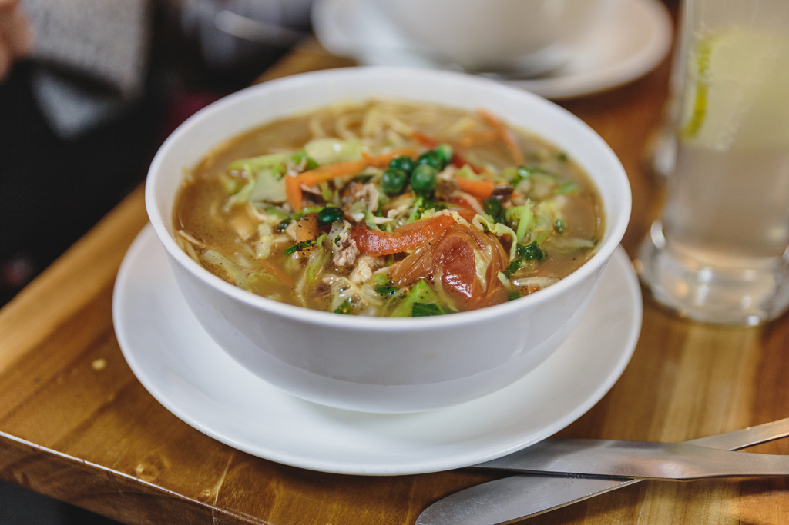
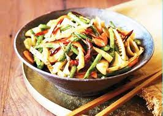

NORTH ZONE
Himachal Pradesh: Dham

Dham is a dish prepared by cooking red kidney beans (rajma), green lentils (moong daal) and rice in curd. It is served teamed with mash daal, boor ki kari and a sweet & sour sauce made from tamarind and jaggery (gur).
Assam: Papaya Khar

Khar is a completely off beat dish prepared out of the unusual combination of red rice, beaten pulses and raw papaya along with traditional Assamese spices. Khar (alkali) is synonymous with Assamese cuisine. Essentially, it is an exotic liquid strained from sun-dried banana skin and cooked with a seasonal vegetable like papaya(omita), water gourd (pani lau)or mustard greens (lai haak).
Kashmir: Rogan Josh

Rogan Josh is an aromatic lamb dish with flavors of browned onions, various spices and yoghurt. It is usually served with steamed rice and consists of pieces of lamb or mutton braised with gravy flavored with garlic, ginger and aromatic spices (cloves, bay leaves, cardamom, and cinnamon).
Punjab: Makki Di Roti & Sarson Da Saag

Makki di Roti is a corn meal Indian bread that tastes fabulous with ‘Sarson saag’ – mustard green and a glass of lassi. The dish is regarded as the traditional way to prepare saag and is usually served with makki di roti literally (unleavened cornbread). It can be topped with either Makkhan (unprocessed white butter or processed yellow butter) or more traditionally with ghee.
Uttar Pradesh: Tunde Ke Kebabs

Tunde Ke Kabab, also known as Buffalo meat galouti kebab, is a dish made out of minced meat which is popular in Lucknow, India. It is part of Awadhi cuisine. It is said to incorporate 160 spices.
Mizoram: Misa Mach Poora
Misa Mach Poora is a sea food delicacy with roasted shrimps that get even better with a squeezed lemon.
Nagaland: Pork with Bamboo Shoot
Pork with bamboo shoots is simply a dish that is cooked with dry bamboo shoots, loads of chilies and herbs. This dish tastes heavenly with boiled rice.
Sikkim: Momo
Momo is a type of South Asian dumpling, served with spicy sauces, popular across the Indian subcontinent and the Himalayan regions of broader South Asia.
Arunachal Pradesh: Thukpa
Thukpa is boiled noodles, filtered and mixed with vegetables and meat items.
Haryana: Bajre Ki Khichdi
Bajre ki Khichdi is a porridge (khichdi) made of coarsely crushed pearl millet and is eaten with pure ghee or sesame oil.
Meghalaya: Jadoh

Jadoh is red hill rice cooked with pork pieces. It is a Khasi version of Biryani and is laboriously-made dish prepared with rice and meat. Being Khasi cuisine, it takes hours to make.
Manipur: Kangshoi
Kangshoi is a soupy stew of seasonal vegetables, coarsely chopped onions or spring onion, dried or fried fish pieces and water
Tripura: Chakhwi
Chakhwi is one of the very traditional and very delicious and healthy preparations of the Tripura cuisines and the m.ain ingredients of chakhwi are Bamboo Shoot, Green Papaya and verities of lentil.
Uttarakhand: Kafuli
This easy-to-make thick curry recipe is made using spinach, fenugreek leaves, garlic, ginger, green chilies, curd, rice paste and a mélange of spices. Kafuli is commonly served as a main-dish and savored best with chapattis or steamed rice.